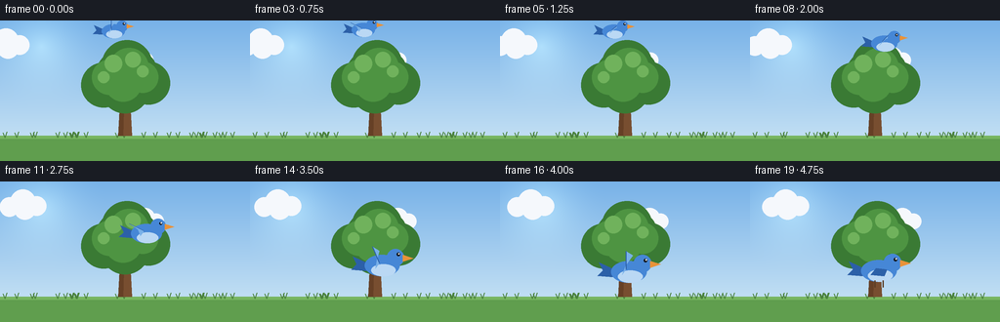
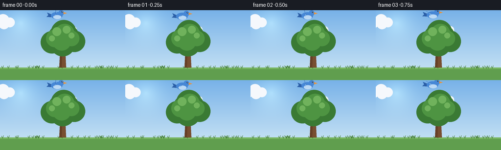

CODING AGENTS AS PIXEL WORLD MODELS
traex/Seed-2.1-Pro-0915 · dynamic_spatial_relationship_0046
点击播放 · 原生 RGB 像素
逐轮保存的候选
回放视频、检查图与代码变化。
每份候选均可单独播放。实际图片检查记录在下方工具轨迹中。
候选 01播放与检查图
点击播放 · 原生 RGB 像素


展开代码变化
--- 上一保存版本
+++ 本次保存版本
@@ -0,0 +1,203 @@
+"""Procedural text-to-video: a bird above a tree flies to the front of it.
+
+Renders 20 RGB frames (256x144 @ 4fps) with PIL/numpy only. The scene is
+drawn at 3x supersampling and downsampled for antialiased edges.
+"""
+import math
+from pathlib import Path
+
+import numpy as np
+from PIL import Image, ImageDraw
+
+import artifact_io
+
+W, H, N, FPS = 256, 144, 20, 4.0
+SS = 3 # supersampling factor
+SW, SH = W * SS, H * SS
+
+CASE_DIR = Path(__file__).parent
+
+
+def smoothstep(a, b, x):
+ if x <= a:
+ return 0.0
+ if x >= b:
+ return 1.0
+ u = (x - a) / (b - a)
+ return u * u * (3.0 - 2.0 * u)
+
+
+def make_background():
+ """Sky gradient plus soft sun, upscaled to the supersampled canvas."""
+ top = np.array([120, 178, 232], dtype=np.float32)
+ bottom = np.array([208, 232, 246], dtype=np.float32)
+ t = np.linspace(0.0, 1.0, H, dtype=np.float32)[:, None, None]
+ grad = top[None, None, :] * (1.0 - t) + bottom[None, None, :] * t
+ bg = np.repeat(grad, W, axis=1)
+
+ yy, xx = np.mgrid[0:H, 0:W].astype(np.float32)
+ d = np.sqrt((xx - 42.0) ** 2 + (yy - 26.0) ** 2)
+ glow = np.clip(1.0 - d / 70.0, 0.0, 1.0) ** 2
+ bg += glow[..., None] * np.array([40, 36, 18], dtype=np.float32)
+ return Image.fromarray(np.clip(bg, 0, 255).astype(np.uint8)).resize(
+ (SW, SH), Image.Resampling.BILINEAR
+ )
+
+
+BG = make_background()
+
+
+def draw_cloud(draw, cx, cy, s):
+ for ox, oy, r in [(-14, 2, 10), (0, -3, 13), (14, 1, 10), (2, 4, 11)]:
+ draw.ellipse(
+ [cx + (ox - r) * s, cy + (oy - r) * s,
+ cx + (ox + r) * s, cy + (oy + r) * s],
+ fill=(245, 248, 252),
+ )
+
+
+def draw_tree(draw):
+ # Ground / grass band.
+ ground_y = 118 * SS
+ draw.rectangle([0, ground_y, SW, SH], fill=(96, 158, 78))
+ draw.rectangle([0, ground_y, SW, ground_y + 3 * SS], fill=(120, 182, 96))
+ rng = np.random.default_rng(7)
+ for gx in rng.integers(4, W - 4, 26):
+ x = int(gx) * SS
+ y = ground_y + 2 * SS
+ draw.line([(x, y), (x - 2 * SS, y - 5 * SS)], fill=(74, 130, 60), width=SS)
+ draw.line([(x, y), (x + 2 * SS, y - 6 * SS)], fill=(74, 130, 60), width=SS)
+
+ # Tapered trunk with a shaded side.
+ cx = 128 * SS
+ trunk_top, trunk_bot = 80 * SS, ground_y
+ draw.polygon(
+ [(cx - 7 * SS, trunk_bot), (cx + 7 * SS, trunk_bot),
+ (cx + 5 * SS, trunk_top), (cx - 5 * SS, trunk_top)],
+ fill=(120, 78, 48),
+ )
+ draw.polygon(
+ [(cx - 7 * SS, trunk_bot), (cx - 2 * SS, trunk_bot),
+ (cx - 1 * SS, trunk_top), (cx - 5 * SS, trunk_top)],
+ fill=(102, 64, 38),
+ )
+
+ # Canopy: layered foliage clusters, dark to light.
+ clusters = [
+ (-22, 6, 23), (2, -14, 26), (24, 4, 22), (0, 10, 25),
+ (-10, -8, 19), (14, -10, 18),
+ ]
+ for ox, oy, r in clusters:
+ x, y, rr = cx + ox * SS, 60 * SS + oy * SS, r * SS
+ draw.ellipse([x - rr, y - rr, x + rr, y + rr], fill=(58, 122, 52))
+ for ox, oy, r in [(-16, 0, 18), (4, -10, 20), (18, 0, 16), (-2, 6, 19)]:
+ x, y, rr = cx + ox * SS, 58 * SS + oy * SS, r * SS
+ draw.ellipse([x - rr, y - rr, x + rr, y + rr], fill=(78, 148, 66))
+ for ox, oy, r in [(-12, -12, 9), (8, -16, 8), (18, -4, 6), (-22, 2, 6)]:
+ x, y, rr = cx + ox * SS, 56 * SS + oy * SS, r * SS
+ draw.ellipse([x - rr, y - rr, x + rr, y + rr], fill=(112, 178, 92))
+
+
+def draw_bird(draw, x, y, s, flap, wing_fold):
+ """Side-view bird facing right. flap in [-1, 1] drives wing sweep."""
+ s *= SS
+ blue, dark_blue, light_blue = (70, 135, 214), (44, 96, 168), (120, 176, 232)
+ orange = (232, 146, 58)
+
+ # Tail feathers.
+ draw.polygon(
+ [(x - 11 * s, y - 2 * s), (x - 22 * s, y - 7 * s),
+ (x - 19 * s, y - 1 * s), (x - 23 * s, y + 3 * s), (x - 11 * s, y + 4 * s)],
+ fill=dark_blue,
+ )
+ # Body and belly.
+ draw.ellipse([x - 13 * s, y - 8 * s, x + 13 * s, y + 8 * s], fill=blue)
+ draw.ellipse([x - 8 * s, y - 1 * s, x + 10 * s, y + 8 * s], fill=(186, 216, 244))
+
+ sx, sy = x - 2 * s, y - 2 * s
+ if wing_fold > 0.5:
+ draw.polygon(
+ [(sx, sy), (sx + 8 * s, sy + 1 * s),
+ (sx + 6 * s, sy + 6 * s), (sx - 4 * s, sy + 5 * s)],
+ fill=dark_blue,
+ )
+ else:
+ ang = flap * (math.pi / 2.6)
+ tip_x = sx + math.sin(ang) * 14 * s
+ tip_y = sy - math.cos(ang) * 13 * s
+ mid_x = sx + math.sin(ang * 0.7) * 7 * s
+ mid_y = sy - math.cos(ang * 0.7) * 7 * s + 4 * s
+ draw.polygon(
+ [(sx, sy), (tip_x, tip_y), (tip_x + 5 * s, tip_y + 3 * s),
+ (mid_x, mid_y), (sx - 3 * s, sy + 4 * s)],
+ fill=light_blue,
+ )
+ draw.line([(sx, sy), (tip_x, tip_y)], fill=dark_blue,
+ width=max(1, int(0.8 * s)))
+
+ # Head, beak, eye with catchlight.
+ hx, hy, hr = x + 10 * s, y - 6 * s, 6.5 * s
+ draw.ellipse([hx - hr, hy - hr, hx + hr, hy + hr], fill=blue)
+ draw.polygon(
+ [(hx + hr - 1 * s, hy - 2 * s), (hx + hr + 7 * s, hy + 0.5 * s),
+ (hx + hr - 1 * s, hy + 3 * s)],
+ fill=orange,
+ )
+ draw.ellipse([hx + 2.2 * s - 1.3 * s, hy - 2.4 * s - 1.3 * s,
+ hx + 2.2 * s + 1.3 * s, hy - 2.4 * s + 1.3 * s], fill=(20, 26, 34))
+ draw.ellipse([hx + 2.6 * s - 0.5 * s, hy - 2.8 * s - 0.5 * s,
+ hx + 2.6 * s + 0.5 * s, hy - 2.8 * s + 0.5 * s], fill=(255, 255, 255))
+
+ if wing_fold > 0.5:
+ for lx in (-3, 3):
+ draw.line(
+ [(x + lx * s, y + 7 * s), (x + lx * s, y + 12 * s)],
+ fill=(90, 60, 36), width=max(1, int(1.1 * s)),
+ )
+
+
+def render_frame(i):
+ img = BG.copy()
+ draw = ImageDraw.Draw(img)
+
+ # Drifting clouds behind the tree.
+ drift = i * 1.6 * SS
+ draw_cloud(draw, (46 * SS + drift) % (SW + 80 * SS) - 40 * SS, 24 * SS, SS)
+ draw_cloud(draw, (178 * SS + drift * 0.6) % (SW + 80 * SS) - 40 * SS,
+ 40 * SS, 0.8 * SS)
+
+ draw_tree(draw)
+
+ # Hover above the tree (frames 0-4), arc forward and down in front of
+ # the tree (frames 5-15), settle there (frames 16-19).
+ x0, y0 = 116.0, 11.0
+ x1, y1 = 132.0, 92.0
+ u = smoothstep(4.5, 15.5, i)
+ arc = math.sin(u * math.pi)
+ bx = x0 + (x1 - x0) * u + arc * 26.0
+ by = y0 + (y1 - y0) * u - arc * 10.0
+ scale = 0.9 + 0.5 * u # grows as it moves toward the viewer
+
+ if i < 5:
+ by += math.sin(i * 1.4) * 1.5
+ if i > 15:
+ by += math.sin((i - 15) * 0.9) * 0.8
+
+ flying = 5 <= i <= 15
+ fold = smoothstep(15.0, 17.5, i)
+ flap_speed = 1.7 if flying else (1.1 if i < 5 else 0.0)
+ flap = math.sin(i * flap_speed * math.pi / 2.0) if fold < 0.5 else 0.0
+
+ draw_bird(draw, bx * SS, by * SS, scale, flap, fold)
+
+ return np.asarray(img.resize((W, H), Image.Resampling.LANCZOS), dtype=np.uint8)
+
+
+def main():
+ frames = np.stack([render_frame(i) for i in range(N)], axis=0)
+ artifact_io.save(frames, CASE_DIR)
+ print(f"Saved {frames.shape[0]} frames {frames.shape[2]}x{frames.shape[1]} to {CASE_DIR}")
+
+
+if __name__ == "__main__":
+ main()
可观测工具轨迹
实际执行的命令与返回图片。
命令 1exit 0
/bin/bash -lc 'cat prompt.txt task_spec.json GENERATION_RULES.md 2>/dev/null; ls -la'
命令 2exit 0
/bin/bash -lc 'cat artifact_io.py'
命令 3exit 0
/bin/bash -lc 'cd . && python generate.py && ls -la'
保存候选 1 份；完成命令 3 次；可验证图片返回 0 张。原始 API 响应与完整日志保留在本地。